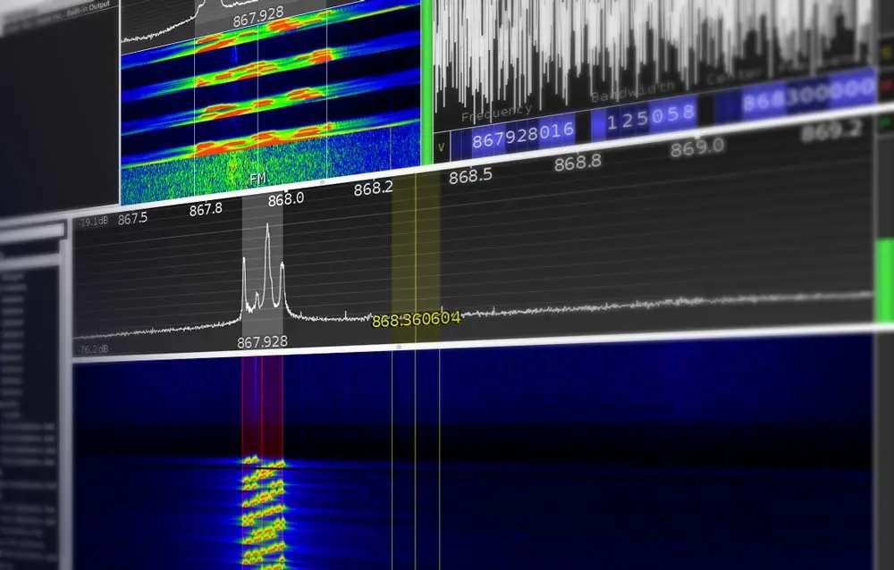
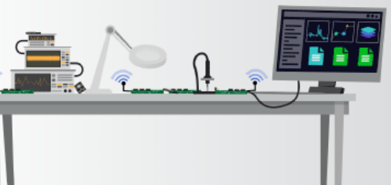

From embedded programming to radio frequency design, explore practical tutorials, software reviews, and insights from the world of modern electronics engineering.
A technical blog dedicated to radio frequency systems and other electronic topics.

Comprehensive reviews of professional electronics software and tools.
